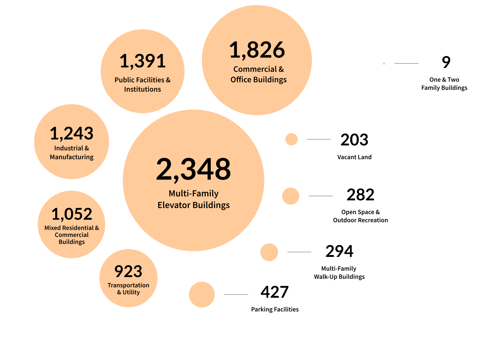

Which buildings have the most open violation orders?
Map of all buildings coloured by the magnitude of active violations. notices will likely clutter - add if no. of violation orders is less (split by borough?)
The New York Fire Department's expenses totalled $37 million in FY 2021. 9999 buildings have open violation orders right now. [Notice of violation = Often issued for administrative reasons, Ignoring may lead to default penalties & open compliance status Violation order = Often issued for imminent safety hazards, Ignoring may lead to Criminal Summons or Vacate Order]
Which buildings have the most open violation orders?
Map of all buildings coloured by the magnitude of active violations. notices will likely clutter - add if no. of violation orders is less (split by borough?)
What % is that by borough?
bar graph (normalised by total no. of buildings in the borough)
How does the type of building correlate with no. of violations?
tiles, connect previous bar graph using the cool method
Are there any connections to building characteristics? (Possible explanations):
small multiples
how old it is/when it was last renovated?
how tall is the building (normalised on) How many units are in the building?
What kind of building is it?
13,973 structural fires in 2021
Project Type: {{ page.type }}
Tools: Figma for prototyping, Svelte and Plotly for web development